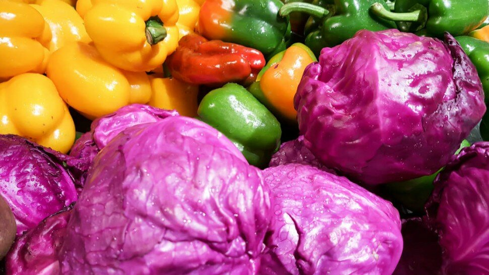

Les aliments anti-cancer : régime et conseils


Sommaire
- Deuxième cause de décès dans le monde
- Quel est le lien entre le cancer et l’alimentation ?
- Nutrition et régime anticancer : existe-t-il une alimentation anticancer ?
- Réduisez votre risque grâce aux antioxydants et aux flavonoïdes
- Faites le plein de fibres !
- Aliments à éviter avant ou pendant un cancer
- Liste non exhaustive d’aliments anti-cancer
- Le vrai régime anticancer du Pr David Khayat - Vidéo
- Conseils pour réduire votre exposition aux cancérogènes
- Conclusion
- Sources

Deuxième cause de décès dans le monde avec 8,8 millions de morts en 2015 selon l’OMS [1], le cancer est un enjeu majeur de santé publique.
Quel est le lien entre le cancer et l’alimentation ?
Nutrition et régime anticancer : existe-t-il une alimentation anticancer ?
Liste non exhaustive d’aliments anti-cancer
Sources
- Cancer, https://www.who.int/fr/news-room/fact-sheets/detail/cancer
- Les lipides et acides gras, https://www.le-guide-sante.org/actualites/nutrition/lipides-acides-gras-macronutriments-apport-energetique
- Pr David Khayat, Éditions Odile Jacob, https://www.odilejacob.fr/catalogue/auteurs/david-khayat/
- 9 raisons de boire du thé vert, https://blognutritionsante.com/2010/06/17/9-raisons-de-boire-du-the-vert/
- Les glucides, https://www.le-guide-sante.org/actualites/nutrition/glucides-macronutriments-nutrition
- Caroténoïdes et cancer : une histoire à rebondissement, https://www.caducee.net/DossierSpecialises/nutrition/aprifel/carotenoides-cancer.asp
- Palozza P, Simone RE, Catalano A, Mele MC. Tomato lycopene and lung cancer prevention: from experimental to human studies. Cancers (Basel). 2011;3(2):2333-2357. Published 2011 May 11. doi:10.3390/cancers3022333
- Roa FJ, Peña E, Gatica M, et al. Therapeutic Use of Vitamin C in Cancer: Physiological Considerations. Front Pharmacol. 2020;11:211. Published 2020 Mar 3. doi:10.3389/fphar.2020.00211
- Sharma P, McClees SF, Afaq F. Pomegranate for Prevention and Treatment of Cancer: An Update. Molecules. 2017;22(1):177. Published 2017 Jan 24. doi:10.3390/molecules22010177
- Produits chimiques cancérigènes, mutagènes, toxiques pour la reproduction, https://www.prc.cnrs.fr/IMG/pdf/criteres-cmr-clp-2.pdf
- Will eating soy increase my risk of breast cancer?, https://www.mayoclinic.org/healthy-lifestyle/nutrition-and-healthy-eating/expert-answers/soy-breast-cancer-risk/faq-20120377
- Isabel Drake, Emily Sonestedt, Bo Gullberg, Göran Ahlgren, Anders Bjartell, Peter Wallström, Elisabet Wirfält, Dietary intakes of carbohydrates in relation to prostate cancer risk: a prospective study in the Malmö Diet and Cancer cohort, The American Journal of Clinical Nutrition, Volume 96, Issue 6, December 2012, Pages 1409–1418, https://doi.org/10.3945/ajcn.112.039438
- Vinceti M, Filippini T, Del Giovane C, et al. Selenium for preventing cancer. Cochrane Database Syst Rev. 2018;1(1):CD005195. Published 2018 Jan 29. doi:10.1002/14651858.CD005195.pub4
- The 21st-century great food transformation, The Lancet, 2019, https://www.thelancet.com/journals/lancet/article/PIIS0140-6736(18)33179-9/fulltext ; DOI: 10.1016/S0140-6736(18)33179-9